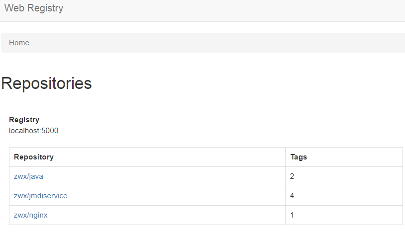
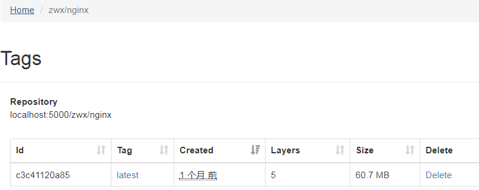

官方的Docker hub是一个用于管理公共镜像的好地方，我们可以在上面找到我们想要的镜像，也可以把我们自己的镜像推送上去。
但是有时候我们的使用场景需要我们拥有一个私有的镜像仓库用于管理我们自己的镜像。这个可以通过开源软件Registry来达成目的。
Registry在github上有两份代码：老代码库和新代码库。老代码是采用python编写的，存在pull和push的性能问题，出到0.9.1版本之后就标志为deprecated，不再继续开发。
从2.0版本开始就到在新代码库进行开发，新代码库是采用go语言编写，修改了镜像id的生成算法、registry上镜像的保存结构，大大优化了pull和push镜像的效率。
官方在Docker hub上提供了registry的镜像，我们可以直接使用该registry镜像来构建一个容器，搭建我们自己的私有仓库服务。
docker search registry # 建议先搜索一下，可以看一下相关的镜像，说不定哪天就有更好的镜像了
docker pull registry # 标签可以不加，因为当前最新就是v2
docker run -d \ # 后台运行
--name registry-srv \ # 指定容器名
--restart=always \ # 设置自动启动
-p 5000:5000 \ # 端口映射宿主机，通过宿主机地址访问
-v /opt/zwx-registry:/var/lib/registry \ # 把镜像存储目录挂载到本地，方便管理和持久化
-v /opt/zwx-registry/srv-config.yml:/etc/docker/registry/config.yml \ # 把配置文件挂载到本地，方便修改和保存
registry
标红delete参数设置为true，是为了让仓库支持删除功能。默认没有这个参数，也就是不能删除仓库镜像。
version: 0.1
log:
fields:
service: registry
storage:
delete:
enabled: true
cache:
blobdescriptor: inmemory
filesystem:
rootdirectory: /var/lib/registry
http:
addr: :5000
headers:
X-Content-Type-Options: [nosniff]
health:
storagedriver:
enabled: true
interval: 10s
threshold: 3需要通过本地仓库下载镜像，均需要配置
vim /etc/docker/daemon.json # 默认无此文件，需自行添加，有则追加以下内容。
{ "insecure-registries":["xx.xx.xx.xx:5000"] } # 指定IP地址或域名
systemctl daemon-reload # 守护进程重启
systemctl restart docker # 重启docker服务docker push xx.xx.xx.xx:5000/nginx # 一定要注明仓库地址，否则会报错
docker pull xx.xx.xx.xx:5000/nginx
curl -XGET http://xx.xx.xx.xx:5000/v2/_catalog # 查看仓库镜像列表（也可以通过windows浏览器打开查看）
curl -XGET http://xx.xx.xx.xx:5000/v2/image_name/tags/list # 查看指定应用镜像tag
docker search docker-registry-web
docker pull hyper/docker-registry-web # 这个镜像用的人较多
docker run -d \ # 后台运行
--name registry-web \ # 指定容器名
--restart=always \ # 设置自动启动
-p 8000:8080 \ # 端口映射宿主机，通过宿主机地址访问
-v /opt/zwx-registry/web-config.yml:/etc/config.yml \ # 把配置文件挂载到本地，方便修改和保存
hyper/docker-registry-web
标红readonly参数设置为false，是为了web页面可以显示删除按钮。默认是true，只读状态，没有删除按钮，只能查看。
registry:
# Docker registry url
url: http://10.88.77.32:5000/v2
# Docker registry fqdn
name: localhost:5000
# To allow image delete, should be false
readonly: false
auth:
# Disable authentication
enabled: false
选择任意应用镜像库，即可查看到该镜像的所有tag信息，每个tag后面都有个删除按钮（默认没有，配置参考config.yml）

集群模式可以通过docker stack快速部署registry和registry web。
新建配置文件srv-config.yml、web-config.yml放到指定路径，再新建docker-compose.yml文件，执行命令即可。
docker stack deploy -c docker-compose.yml RGT
version: '3.7' # docker stack 需要是3.0以上版本
services:
registry-srv: # 服务名
image: registry
ports: # 映射端口
- 5000:5000
volumes: # 挂载镜像路径和配置文件，注意修改路径与实际一致
- /opt/zwx-registry:/var/lib/registry
- /opt/zwx-registry/srv-config.yml:/etc/docker/registry/config.yml
deploy: # 设置单任务，并约束主节点运行
mode: replicated
replicas: 1
placement:
constraints:
- node.role == manager
registry-web: # 服务名
image: hyper/docker-registry-web
ports: # 映射端口
- 8000:8080
volumes: # 挂载配置文件，注意修改路径与实际一致
- /opt/zwx-registry/web-config.yml:/conf/config.yml
environment:
- REGISTRY_URL=http://registry-srv:5000/v2
- REGISTRY_NAME=localhost:5000
deploy: # 设置单任务，并约束主节点运行
mode: replicated
replicas: 1
placement:
constraints:
- node.role == manager
作者：Leozhanggg
出处： https://www.cnblogs.com/leozhanggg/p/12050322.html
本文版权归作者和博客园共有，欢迎转载，但未经作者同意必须保留此段声明，且在文章页面明显位置给出原文连接。